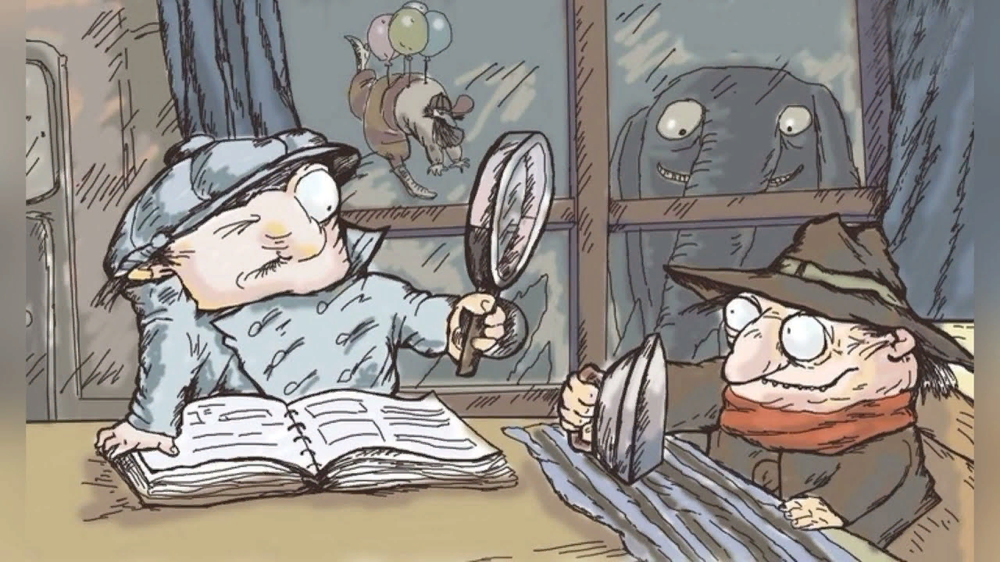

Следствие ведут Колобки. Следствие третье. ОГРАБЛЕНИЕ ТРЕТЬЯКОВСКОЙ ГАЛЕРЕИ
Эдуард Успенский
Однажды в комнате знаменитого Колобка телефон зазвенел как-то особенно тревожно. Все побросали свои важные дела и стали слушать, что говорит Колобок. А разговор Колобка с телефонным посетителем был таков:
- Алло! Это НПДД?
- Так точно. НПДД у телефона.
- С вами говорят из Третьяковской галереи. Можно позвать к аппарату знаменитого Колобка.
- Знаменитый Колобок у аппарата.
- Колобок, Колобок, здесь один подозрительный тип хочет украсть картину.
- Почему вы так решили?
- Потому что он несколько дней крутится рядом. Заглядывает в окна, залезает в подвалы, осматривает крышные подходы. А когда он проходит мимо, он подозрительно звенит.
- Объясните отчетливее. Что значит подозрительно звенит?
- Отмычки!
- Намек понял. И что вы хотите?
- Возьмите его с поличным. Хорошо?
- Хорошо, да не очень. На это у нас милиция. Обратитесь, пожалуйста, к ней.
- Не могу.
- Почему?
- Потому что я и есть милиция. Меня зовут милиционер Спицын.
- Вот и возьмите его с поличным.
- Не могу. Я дежурю только до шести. А после шести никого нет, милицейский пост закрывается.
- Да? А прихватить пару часиков после любимой работы для любимой работы?
- Не могу. После любимой работы я иду в любимый университет философизма. Мы, милиционеры, должны быть образованными людьми. Нас на это нацеливают.
- Спасибо, - сказал Колобок. - Сигнал принят. Будем работать.
Он положил трубку, но еще долго ворчал. Ворчала и лаборантка Колбочкина:
- Их на это нацеливают. Лучше бы их нацеливали по мишени стрелять. Или народные Третьяковские галереи беречь.
- Товарищ Колбочкина, - строго сказал Колобок, - не будем терять время на обсуждение действий милиции. Лучше займемся составлением плана по спасению дорогих народных картин, по захвату подозрительных преступников. Какие будут предложения?
- Спасти и захватить! - предложил Булочкин.
- Но как?
- Мое дело - предложить идею, - сказал Булочкин. - А как - это уже детали.
- Колобок, а что если нам взять и самим украсть эту картину, - предложила инициативная Колбочкина. - Им и воровать будет нечего.
- Интересная мысль! - сказал Колобок. - Борьба с хищениями при помощи хищений.
Так Колобок иронизировал. Но буквальный Булочкин не понял иронии.
- Шеф, - сказал он. - Эта мысль трудновыполнимая.
- Почему, Булочкин?
- Мы же не знаем, какую картину он хочет украсть.
- По-моему, мы зря теряем время! - сказал Колобок. - Чтобы составить план, мы прежде всего должны побывать на месте будущего преступления.
- Это где, шеф?
- В Третьяковской галерее.
Каждому, кто хоть раз бывал в Москве, знакомо здание Третьяковской галереи - оно находится рядом с кинотеатром "Ударник". Колбочкина, Булочкин и Колобок подошли к нему без пятнадцати шесть. Около входа в галерею, из которого выходили последние посетители, стоял грустный милиционер Спицын. Колобок подошел к нему:
- Здравствуйте, я - Колобок. Вот мое удостоверение.
- Очень приятно, - сказал милиционер, рассматривая красную книжку Колобка. - Но я почему-то думал, что оно у вас круглое.
- А у товарища Булочкина оно имеет форму батона! - ответил на это Колобок. - Только мне сейчас не до шуток. Показывайте, где наш предполагаемый преступник.
- Вон он, этот предполагаемый тип с чемоданчиком. Мне кажется, он уже созрел.
- А почему вы так решили?
- Он уже с чемоданом. Чемодан, надо думать, для картины.
- Ишь ты, какой горячий! - закричала Колбочкина. - А может быть, он с этим чемоданом в баню собрался или в лес за грибами.
- Можете мне не верить, - сказал милиционер Спицын, - только мне мое милицейское сердце подсказывает, что сегодня он попробует взять какой-нибудь самый главный третьяковский шедевр. Все, до свидания. Я пошел в свой любимый вечерний институт любимого философизма. - И милиционер, переложив тяжелую нравственную задачу на Колобка, легкой походкой отправился на занятия. А Колобок тяжелыми шагами командора направился ко входу в Третьяковскую галерею.
Такими же резко потяжелевшими шагами шли за ним Колбочкина и Булочкин. Можно было подумать, что они несут на спине невидимые мешки с конфискованной картошкой или золотыми слитками.
У входа стоял седоватый и румяноватый работник галереи в форменном зеленом костюме. Чем-то он напоминал деда Мороза в отпуске. Очевидно, тем, что не имел мешка с игрушками. Он выпускал последних посетителей и готовился закрывать двери.
Колобок протянул ему свое служебное удостоверение и спросил:
- Вы - дежурный?
- Так точно.
- Сегодня мы будем дежурить вместе. Ожидается крупное ограбление… Почти налет.
- Я очень рад! - сказал седоватый и румяноватый дежурный. Хотя радоваться особенно было нечему. Он тут же поправился:
- Я не тому рад, что будет ограбление, а тому, что мы будем дежурить вместе. Я много о вас слышал, и мне надоело одному пить чай всю ночь.
- Будем пить чай вместе, - сказала Колбочкина. - У меня и варенье с собой.
- Прошу вас проследовать в служебное помещение! - сказал дежурный, и они проследовали в маленькую каморку под главной лестницей.
- Давайте теперь как следует знакомиться. Меня зовут Лука Лукич Сковородкин. Я из старинной рабоче-дворянской семьи.
- Меня зовут Колобок. Я из сельской местности.
- Меня - Колбочкина. Я из старинной подметальной семьи. Я дворником работала.
- А я - Булочкин. Я родился между молотом и наковальней в хлебопекарне. Мои родители были крупчатниками.
И Лука Лукич рассказал свою биографию. Он поступил в Третьяковскую галерею еще мальчиком вместе с нынешним ее директором. Они были ночными дежурными и протиралыциками пыли. Только директор пошел в институт, окончил его и стал директором. А Лука Лукич не захотел расставаться с любимой профессией. Так и остался ночным сторожем.
Тем временем ночь постепенно надвигалась на Третьяковскую галерею.
- Как вы думаете? - спросил Лука Лукич. - С какой стороны будет налет?
- Со всех сторон! - твердо ответил Булочкин.
- Булочкин, - возразил Колобок, - мне стыдно за вас. Мы ждем нападения одного малолетнего воришки, а вы говорите так, будто на нас будет выброшен целый парашютный преступный десант. Я думаю, преступник полезет через чердачное окно на крыше. Потому что оно выходит на сторону стройплощадки. И никто его не заметит, когда он будет залезать.
- И мы его сразу схватим около этого окошка? - спросил дежурный Сковородкин.
- Ни за что. Мы подождем, когда он выберет и упакует картину.
- А сигнализация? Ведь она может сработать и отпугнуть воришку.
- Я думаю, он не дурак. Он непременно отключит сигнализацию.
- Я ни разу в жизни не задерживал преступников, - признался Лука Лукич. - Я не подозревал, что это так сложно. А преступник вооружен?
- Безусловно, - согласился Колобок.
- Ножи? Пистолеты? - спросил Булочкин. - Слезоточивый глаз?
- Ничего подобного. Он вооружен юридическими знаниями. Если мы задержим его без картины, он скажет, что просто заблудился. Или что он забыл здесь свою шапку. Или он скажет, что сюда залетел его любимый попугай. И мы вынуждены будем его отпустить.
- Ни за что! - возразил решительный Булочкин. - Мы возьмем его вместе с попугаем.
Как раз в это время загрохотала железная крыша, и Колобок, освещая себе дорогу фонариком, двинулся в сторону чердака. Булочкин шел рядом, ни на минуту не выпуская шефа из поля зрения. С собой он прихватил коробку от торта.
- Зачем? - прошептала Колбочкина, которая оставалась внизу.
- Для попугая, - тихо ответил он.
Недалеко от лестницы, ведущей на чердак, Колобок залег позади старинной скульптуры "Дети держат земной шар".
- Шеф, а куда мне прятаться? - спросил верный помощник.
- Булочкин, Булочкин, идите себе пить чай, Когда вы понадобитесь, я вас вызову по рации.
Только в этот раз Булочкин решил ослушаться приказа. Он не мог оставить шефа одного. Поэтому он подошел к скульптурной группе детей и тоже стал держать земной шар. Тем временем преступник открыл дверь, ведущую на чердак, и вошел в помещение третьего этажа. Луч добротного карманного фонаря-жужжалки освещал ему путь.
Земной шар оказался необычайно тяжелым, и Булочкин с ужасом думал, что больше трех минут ему этот шар не удержать. Ему все время хотелось поменять руки или хотя бы позу. Слава богу, что преступник быстро спустился на второй этаж.
"Все ясно! - понял Колобок. - Он направляется к малым голландцам".
"Все ясно! - подумал Булочкин. - Пошел связывать дежурного".
Но преступник не стал делать ни того, ни другого. Он открыл окно второго этажа и при свете уличных фонарей надел резиновые перчатки. Затем высунулся в открытое окно и портативными кусачками перекусил электрический провод, проходящий по стене галереи. Сигнализация больше не работала. А сам преступник пошел по залу и стал рассматривать шедевры на стенах. При этом его интересовало не столько содержание картины, сколько ее размер. Он подносил к картине чемодан и смотрел - поместится она в чемоданчике или нет.
Без особого интереса он прошел мимо знаменитой картины художника Васнецова "Аленушка", масло, холст, 173x121. Едва взглянул даже на картину "Бриг "Меркурий", атакованный двумя турецкими кораблями", холст, масло, 212x339, привезенную из Феодосии на выставку художника Айвазовского. А на картину художника Налбандяна "Большая ширь", холст, масло, 583x300 даже смотреть не стал.
Зато картину художника Поленова "Московский дворик", масло, 64,5x80,1 он рассматривал очень долго. Точно так же, как и картину "Грачи прилетели" старинного художника Саврасова, холст, масло, 62x48,5.
Но больше всего его заинтересовала картина художника Ильи Ефимовича Репина "Портрет писателя Всеволода Михайловича Гаршина", холст, масло, 47,7x40,3. Она так его чем-то пленила, что он медленно стал снимать ее со стены и укладывать в чемодан.
"Уйдет! - думал Булочкин. - Уйдет!" Он хотел бросить свой земной шар и схватить преступника, но очень боялся, что земной шар со страшным шумом рухнет на пол, что дети одни не удержат его.
И тут сверкнула молния. Это Колобок при помощи фотовспышки сделал снимок "Преступник, снимающий картину, на месте преступления", фотобумага, 9 на 12. И похититель молча поднял руки вверх.
- Вы задержаны! - строго сказал Колобок и стал укладывать фотоаппарат в футляр. Стоило ему только на секунду отвести глаза, как преступник сорвался с места и побежал ко входу на чердачную лестницу. Еще секунда, и он уйдет. Но не тут-то было. Когда он пробегал мимо Булочкина, Булочкин бросил, наконец, свой земной шар и вцепился в убегальщика мертвой хваткой. Целых полчаса после этого Колобок и Колбочкина разжимали пальцы нашего, якобы, мягкого Булочкина.
- Фамилия у него мягкая, а сам он железный! - сказал после этого Колобок про своего соратника. И фраза эта много лет потом ходила за Булочкиным, принося ему бессмертную славу.
- Итак, давайте знакомиться! - сказал Колобок преступнику. - Я - Колобок. А вы?
- А я - случайный прохожий, - ответил преступник. - Любитель живописи.
- Ага, - согласился Колобок, - вы настолько любите живопись, что не удержались и в ночное время полезли в музей знакомиться с шедеврами?
- Вы совершенно правильно меня поняли! - сказал ночной жулик.
- Ах ты, жалкий врунишка! - рассердилась Колбочкина. - Да я тебе за такое вранье!.. - она замахнулась на преступника металлической кружкой для заварки чая.
- Отставить, - приказал Колобок. - Товарищ Колбочкина, - строго сказал он, - прошу вас запомнить - подобные методы в нашей стране отменены еще в 1921 году. И больше мы к ним возвращаться не будем.
- А теперь выворачивайте карманы! - строго приказал Колобок. - Сдавайте оружие и отмычки.
Но ни оружия, ни отмычек у преступника не было. Было только пять рублей и чистое белье с сухарями в чемоданчике. Больше не было ничего. Даже носового платка.
И тут в разговор вмешался ночной дежурный Лука Лукич:
- Итак, вы любите живопись. А знаете ли вы, какую картину вы хотели похитить? Да это же портрет писателя Гаршина. Знаете вы такого? А писал портрет сам великий Репин!
Преступник задумался:
- Нет, не знаю я Гаршина. Да и Репина я не знаю.
- Великого Репина! - поправил его Лука Лукич.
- Вот именно, - согласился преступник. - Никогда не слышал.
- До чего докатились! - поразилась Колбочкина. - Репина не знают! И Гаршина! Какой позор!
- А вы их знаете? - спросил Колобок.
- По правде говоря, не очень, - призналась Колбочкина. - Репина еще туда сюда, а вот Гаршина - ну ни капельки.
- Вы как хотите, - сказал Лука Лукич, - я вас отсюда не выпущу, пока не расскажу вам об этом знаменитом художнике. И обо всех других.
Больше всех возмущался задержанный:
- Как так не выпустите! Да у меня кошка не кормлена. Да у меня билеты в кино на Штирлица. Да меня столько дел ждет.
- Вас сейчас ждет только одно дело, - строго одернул его Колобок, - дело о попытке похитить картину "Портрет писателя Гаршина" из Третьяковской галереи.
- Меня ждет семья.
- Да нет, - поправил его Колобок, - вас ждет скамья.
- Какая такая скамья?
- Такая, - не выдержала Колбочкина, - подсудимая, вот какая.
- Да, пожалуй, я никуда не тороплюсь, - согласился преступник и протянул всем руку. - Давайте знакомиться - Вася Углов У меня было тяжелое детство. Безотцовщина. Голод… Отсутствие витаминов. Меня легко понять.
- Прекратить! - сказал Колобок и в гневе стукнул по рации кулаком. Рация испуганно сказала: "Вы слушаете "Голос Америки". В Вашингтоне полночь. Передаем последние известия".
Тут испугался Булочкин и тоже стукнул по рации кулаком. Тогда она сразу исправилась и сказала: "Вы слушаете "Маяк". Передаем новости с полей".
Но новости с полей они не услышали. Потому что Колобок провел с ними небольшую беседу на тему, как некоторые люди свои преступления сваливают на родителей, школу, улицу, плохих товарищей и западную пропаганду.
- Чтобы я больше этого не слышал! - сказал он Василию Углову. - Вы сами во всем виноваты и сами за все будете отвечать.
- Только это потом, - сказал Лука Лукич. - А сейчас мы начнем экскурсию. Итак, что мы видим в первом зале?
- Потресканные выпуклые доски с блестящими гражданами на них! - ответил преступный Вася.
- Караул! - схватился за голову ночной экскурсовод. - Потресканные доски с блестящими гражданами?! Откуда такая темнота? Да это же первые русские иконы. Это истоки живописи. Вот эта блестящая гражданка - это же Владимирская Божья матерь. Ее писали еще в древней Византии. Потом она долго хранилась у киевских князей. Потом великий князь Андрей Боголюбский украл ее у киевлян и привез в город Суздаль.
"Ему можно!" - тихо подумал про себя Вася Углов.
- В тихой печали прильнули друг к другу младенец и мать. В сознании русских людей эта икона стала символом славы централизованного русского государства… - он был готов рассказывать об этой иконе часами.
Но тут наступило утро, и Лука Лукич прекратил дозволенные речи.
- Оставьте мне этого подростка на несколько дней, вы не узнаете его! - попросил он Колобка.
- Шеф, - сказал пристыженный Булочкин. - Мне тоже надо остаться на несколько дней, чтобы меня никто не узнавал. Пора менять внешность и набираться знаний.
- Мы все остаемся, - принял решение Колобок. - То есть нет. Мы оставляем этого подростка вам. А сами будем приходить сюда на ночные лекции каждый день. То есть каждую ночь. Днем мы будем на трудовом посту.
- Шеф, - спросил обеспокоенный Булочкин, - а он не убежит?
- Куда он денется! - сказала Колбочкина. - Мы его проволокой к батарее прикрутим.
- Ни за что. Мы не будем его прикручивать. Потому что это остается у нас, - Колобок показал Булочкину фотоаппарат. - И если он смоется… то есть я хотел сказать, если он скроется, мы немедленно опубликуем фотографию "Преступный Василий Углов крадет портрет писателя Гаршина". Нашего Василия через пять минут приведут. И никакое тяжкое детство не поможет.
- Еще и отлупят! - радостно сообщила Колбочкина.
- Да? А что я буду делать целый день? - спросил Вася.
- Подметать. Стирать пыль с шедевров. Читать популярную литературу. Проверять билеты, - сказал Лука Лукич.
- Колобок! - вдруг спохватилась Колбочкина. - А вдруг у него в самом деле дома кошка некормленная.
- Да? - спохватился похититель. - И две собаки!
- Колбочкина! Колбочкина! Нет у него никакой кошки.
- Шеф, а почему вы так решили? - спросил Булочкин.
- Очень просто. Помните, когда мы провели обыск, мы не нашли у него ключа от квартиры. Это значит, что у него квартиры нет. Или в ней живет еще кто-то, кто открывает ему дверь.
- Да? - закричал преступник. - А может, у меня ключ под ковриком?! Может быть, я такой весь открытый!
- А тогда вы скажите нам адрес, - предложила Колбочкина, - где ваш этот коврик. Мы поедем и накормим вашу кошку.
- И посмотрим заодно, нет ли там еще каких-либо украденных шедевров, - согласился Колобок.
- Колобок, - признался Вася, - нет у меня никаких украденных шедевров, и кошки у меня нет. А есть только очень строгий старший брат, который может меня очень строго наказать. Лучше я здесь останусь.
Как раз в это время подошел дневной милиционер Спицын, и Колобок сдал ему пост вместе с задержанным Васей.
С тех пор у Колобка, Колбочкиной, Булочкина и задержанного Васи началась новая жизнь. Днем Колобок с бригадой занимался разбором нарушений, мелких преступлений и краж. А вечером они отправлялись в Третьяковскую галерею слушать лекции ночного экскурсовода Луки Лукича Сковородкина.
- Итак, - говорил Лука Лукич, - в этом зале в основном собраны картины художника Брюллова. Что вы можете сказать, глядя на эту картину? Она называется "Всадница".
- Что мы можем сказать? - говорил Вася Углов. - Буржуазная женщина, участница конно-спортивных соревнований, подъехала к ресторану попросить стакан "Фанты" для себя и для своей лошади.
Лука Лукич даже за голову схватился:
- Почему вы так решили?
- Потому что наши женщины таких платьев не носят. И вообще сейчас лошади как средство транспорта отменены. Они только на соревнованиях бывают.
- А зачем лошади "Фанта"? - спросил Булочкин.
- Чтобы она блестела. Лошадей и собак перед соревнованием натирают напитками. Я об этом читал.
- Где вы читали такую ерунду? - спросил Колобок.
- В "Медицинской газете" и в газете "День", - ответил Углов.
Продолжение следует